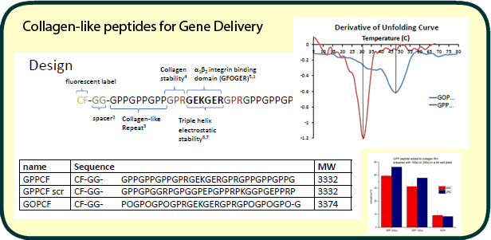
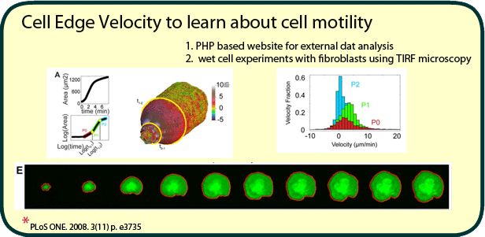
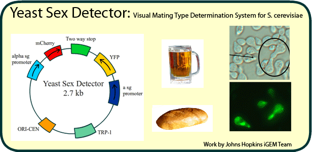
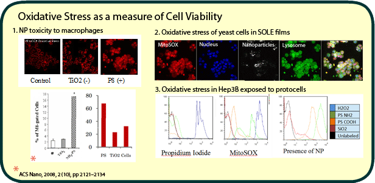

Research
Collagen Mimetic Peptides
Design and melting points given by CD curve derivative. University of Delaware.

Cell Edge Velocity Tracking
Cells spreading on fibronectin-coated glass. Columbia University.

Yeast Sex Detector — iGEM 2008
Synthetic biology competition at Johns Hopkins University.

Oxidative Stress of Nanoparticles on Cells
Investigating the effects of nanoparticles on cellular oxidative stress.

Neisseria Fluorescent Reporters
Bacterial imaging and tracking using fluorescent reporters.
Publications
Global biochemical and structural analysis of the type IV pilus from the Gram-positive bacterium Streptococcus sanguinis
JL Berry, I Gurung, JH Anonsen, I Spielman, et al. — Journal of Biological Chemistry, 2019
Functional analysis of an unusual type IV pilus in the Gram-positive Streptococcus sanguinis
I Gurung, I Spielman, MR Davies, R Lala, P Gaustad, N Biais, V Pelicic — Molecular Microbiology, 2016
The Vibrio cholerae Minor Pilin TcpB Initiates Assembly and Retraction of the Toxin-Coregulated Pilus
D Ng, T Harn, T Altindal, S Kolappan, JM Marles, I Spielman, et al. — PLOS Pathogens, 2016
Analyzing bacterial movements on surfaces
EL Munteanu, I Spielman, N Biais — Methods in Cell Biology, 2015
Quantification of cell edge velocities and traction forces reveals distinct motility modules during cell spreading
BJ Dubin-Thaler, JM Hofman, Y Cai, H Xenias, I Spielman, AV Shneidman, LA David, et al. — PLOS ONE, 2008